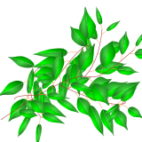

Create an svg file with benjamini leaves
create_benjamini_svg.RmdLet’s have a look how the benjamini leaves can be integrated in svg files. First we’ll load some libraries.
library(benjaminileaves)
library(dplyr)
library(purrr)
library(tidyr)
library(ggplot2)
library(stringr)
library(minisvg)
set.seed(21)Now we’ll define a structure of bezier curves that we’ll use as the coordinates for branches:
size <- 160
df_branches <- tibble(
x = sample(1:size, 20, replace = TRUE),
y = sample(1:size, 20, replace = TRUE),
bezier_idx = rep(1:5, each = 4)
)Now let’s grow leaves on these branches:
df_branches_and_leaves <- df_branches %>%
group_split(bezier_idx) %>%
map_dfr(
~benjamini_branch(df_branch = .x[c("x", "y")]),
.id = "bezier_idx"
)and plot this:
df_branches_and_leaves %>%
unite(idx, bezier_idx, i_branch, i_part, element, remove = FALSE) %>%
ggplot(aes(x = x, y = y, group = idx, color = factor(bezier_idx))) +
ggforce::geom_bezier(show.legend = FALSE) +
scale_y_reverse() +
theme_void()
Next we’ll define a helper function to define the “d” element of svg path strings.
get_svg_bezier_string <- function(bezier_df) {
bezier_df %>%
group_by(i_part) %>%
slice(-1) %>%
summarise(cb = paste(x, y, sep = ",", collapse = " ")) %>%
pull(cb) %>%
paste("C", ., collapse = " ") %>%
# paste("Z") %>%
paste0("M ", bezier_df$x[1], ",", bezier_df$y[1], " ", .)
}
df_svg <- df_branches_and_leaves %>%
group_by(bezier_idx, i_branch, element) %>%
summarise(path_str = get_svg_bezier_string(tibble(x, y, i_part))) %>%
mutate(fill_color = case_when(
element == "half 1" ~ "url(#RadialGradient3)",
element == "half 2" ~ "url(#RadialGradient4)",
element == "stalk" ~ "sandybrown",
element == "branch" ~ "brown"
))
#> `summarise()` has grouped output by 'bezier_idx', 'i_branch'. You can override using the `.groups` argument.
df_svg
#> # A tibble: 185 × 5
#> # Groups: bezier_idx, i_branch [65]
#> bezier_idx i_branch element path_str fill_color
#> <chr> <dbl> <chr> <chr> <chr>
#> 1 1 0 branch M 63,71 C 3,74 57,159 47,124 brown
#> 2 1 1 half 1 M 48.6,80.08 C 44.67,78.84 37.51,… url(#RadialGr…
#> 3 1 1 half 2 M 48.6,80.08 C 51.49,83.02 50.29,… url(#RadialGr…
#> 4 1 1 stalk M 53.31,72.4 C 52.46,71.94 49.24,… sandybrown
#> 5 1 2 half 1 M 36.23,73.82 C 35.27,69.51 26.05… url(#RadialGr…
#> 6 1 2 half 2 M 36.23,73.82 C 33.36,77.18 21.5,… url(#RadialGr…
#> 7 1 2 stalk M 44.86,75.97 C 45.02,75.27 36.16… sandybrown
#> 8 1 3 half 1 M 39.92,88.39 C 35.52,89.79 34.53… url(#RadialGr…
#> 9 1 3 half 2 M 39.92,88.39 C 44.52,88.8 47.5,9… url(#RadialGr…
#> 10 1 3 stalk M 39.13,81.19 C 38.24,81.36 40.42… sandybrown
#> # … with 175 more rowsNow, we’ll create a svg document object:
doc <- SVGDocument$new(width = size, height = size)In order to have some more realistic texture, we’ll define gradients for the leaves:
g3 <- stag$radialGradient(
id = "RadialGradient3", cx="0.35", cy="0.63", r="0.7",
stag$stop(offset = "0%", stop_color = "#00FF00"),
stag$stop(offset = "100%", stop_color = "#008000")
)
g4 <- stag$radialGradient(
id = "RadialGradient4", cx="0.5", cy="0.5", r="0.5",
stag$stop(offset = "0%", stop_color = "#40DD40"),
stag$stop(offset = "100%", stop_color = "#208020")
)…and append them to the document:
doc$append(g3, g4)Here we define helper functions to append pathes as polygons or lines to the svg:
append_polygon <- function(doc, path_str, fill_color) {
doc$append(
stag$path(
d = path_str,
fill=fill_color,
fill_opacity="1"
)
)
}
append_line <- function(doc, path_str, fill_color) {
doc$append(
stag$path(
d = path_str,
stroke_width = "0.5",
fill = "none",
stroke=fill_color
)
)
}
append_element <- function(type, path_str, fill_color) {
switch (
type,
"half 1" = ,
"half 2" = append_polygon(doc, path_str, fill_color),
"branch" = ,
"stalk" = append_line(doc, path_str, fill_color)
)
}Now we can finally append the branches with leaves to the svg:
pwalk(list(
df_svg$element,
df_svg$path_str,
df_svg$fill_color
),
function(x, y, z) append_element(x, y, z)
)Et voilà
doc$show()